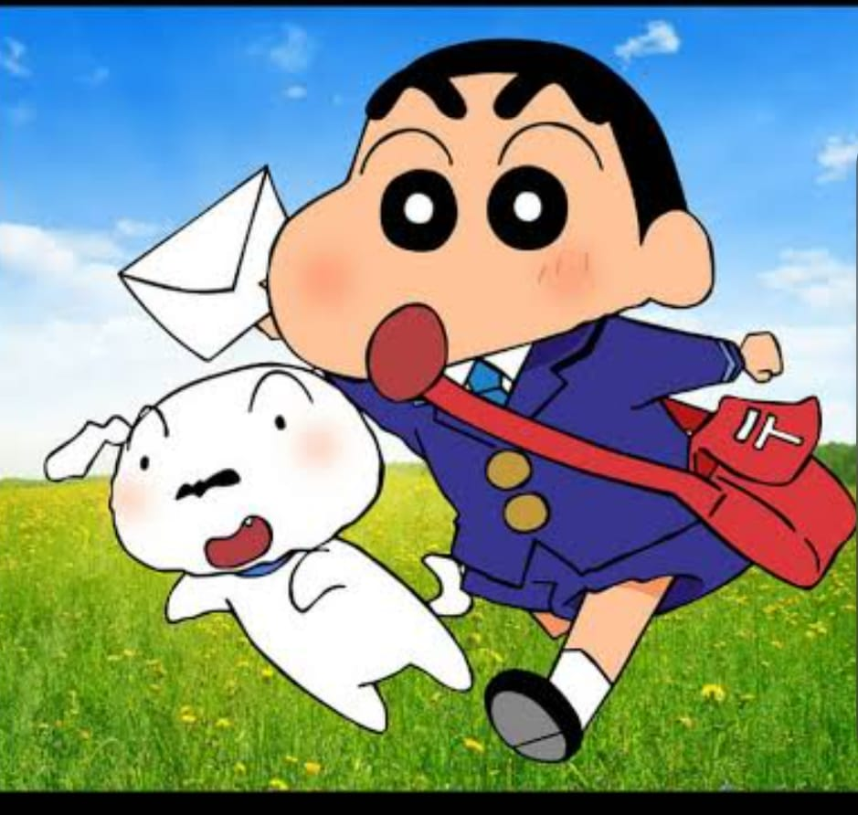

Crayon Shin-chan is a beloved Japanese comedy manga and anime series created by Yoshito Usui. It follows the daily life of Shinnosuke (Shin-chan) Nohara, a brutally honest and mischievous 5-year-old boy, along with his family, friends, and dog in Kasukabe, Saitama, Japan
